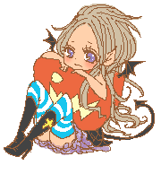
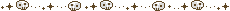
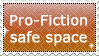

Welcome!

Hello and welcome to my weird corner of the internet!
This is a little project of mine, dedicated to my obessions about monsters and other critters.
Parts of the site are still under construction but feel free to explore.

Warning:
Site may contain some elements of horror, as well images of insects
Viewer discretion is advised.


Zine
 Updates
Updates
25/3/26: This site now uses Deploy to Neocities. Now I dont have ot upload pages manually to the site editor
19/2/25: Removed the icons for the Neil Gaiman and Sandman Fanlists on the About page. I almost forgot it was still there.
31/8/24: Added some new sites to my links page, removed some non-working ones
26/3/24: Added an biology entry about the white wagtail
14/3/24: Fixed the About and Journal entry pages, and added a favicon to the rest of the site
8/3/24: New entry for the Biology Library section.
8/1/24: Site is back to normal
1/12/23:Site is now on a Festive Mode
26/11/2023:Added some new stuff to the Links page, removed and replaced some buttons, and changed the position of certain sections.
12/11/2023: Added a new entry to the games section of the Library. It´s about Halloween Pokemon
27/09/2023: Updated the Links Page, I also had to correct some gramatical errors on my Superman article, oops.
18/09/2023: Added new entry on the Biology section.
17/09/2023: Added new links on the links page, also added the Literature and Games Library section.
11/09/2023: Due to my rss feed not showing on my Journal, I decided to remove it. It now links directly to Dreamwidth.
14/07/2023: This site now has an Rss feed, now you can get site updates from the feeder of your choice!
12/06/2023: Added the Nightwalker Entry to the Movie section of the Library.
31/05/2023: Removed some contact links from my about page, I thought they were uncessary.
10/05/2023: Changed Image Hosts bye Imgur.
3/05/2023: Removed Adopt of the Month, couldnt be bothered to do it anymore.
31/03/2023: Updating the seagull diary again, and I just joined the FujoFans web listing!
1/03/2023: Added a new entry on the tv section for the library
18/1/2023: Changed mastodon instances, I found a much better community
16/1/2023: I added two new sections to my sticker album
22/12/2022: You may have noticed this site has gone a bit festive, happy holidays!
15/12/2022: Spruced the links page a bit with a scrollbox, added a section for dead sites, and a shiny new link!
13/12/2022: I removed the AI image entry of my gallery, I just think it felt wrong after learning about it screwing artists over.
08/11/2022: Creature Feature has just moved to Melon Town! you can find me at A6.
28/10/2022: I just joined: 
07/10/22: Replaced the welcome gif to be more in line with the season
03/10/22: Added status cafe Widget
30/09/22: Added imood to my journal, and now jsut added a favicon!
28/09/22:This site has now a special Halloween page!
13/09/22:Improved the Sitemap and fixed another broken link.
1/09/22:Added a Tv Room, and finally did something about the Misc page.
29/08/22:Due to the deletion of DokoDemo (may it rest in peace) I´m in the process of updating the navlink, and save the creatures I´ve adopted there. They will always have a home here.
24/08/22:I fixed the broken quiz images in the about page, should be visible now.
22/07/22:Hey Look I revamped my about page, feel free to learn more about this site´s webmaster.
17/07/22:Added the biology section
12/07/22:Fixed the footer links.
30/06/22: Completed the Gallery, moved the stamp links to Credits, and added a sitemap
24/06/22:Introducing my EFT gallery collection! (insert joke about nfts here)
22/06/22:I´ve add a new section on the links page dedicated to original and fanworks. Also I really need to fix that sidebar, so bear with me
20/06/22:I´ve organized the gallery and it has now an Art Section
15/06/22:I noticed the library link was broken. Oops. Also I have a site button!
14/06/22:Just joined a bunch of fanlists. you can see them in my about me page
12/06/22:Added a couple of webrings to my sidebar. I will improve on their appearance later.
11/06/22:Finished adding all the sections to my journal. Plus add more new virtual pets to play with.
9/06/22:Made some changes to the journal and there are a couple of entries.
6/06/22:I´ve finished converting the monster library, now it looks like the rest of the site.
2/06/22:The virtual creatures page welcomes it´s new additions. They can also grow on their own!
31/05/22:Fixed the Links page and Added a page for adopts!
30/05/22: Did away with the old layout and built a new one from scratch
12/05/22: I decided to do a makeover to my blog section. From now on I´m calling it a journal just to feel fancy. Also it now looks like one.
28/04/22: More updates to the gallery. I added a slideshow to my flickr gallery, because I´m too lazy to link photos one by one. There is also a visitor counter, a guestbook, and a small little easter egg, can you guess what it is?
27/04/22: Links page has been updated.
21/04/22: Added the theme and About Me page.
22/04/22: Made an site update section and a blog